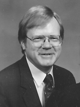

Please note: the AAS Obituaries are temporarily being hosted on this website while their full content is being ingested into the PubPub publishing platform newly adopted by the Bulletin of the American Astronomical Society. When the migration is complete, your existing links will take you to the final, migrated content. Contact peter.williams@aas.org with any questions.
James Harvey Hensley (1940-2002)
James Harvey Hensley, a dedicated educator in astronomy and physics for over thirty years, died in Platteville, Wisconsin on 13 March 2002. He had been suffering from cancer since the spring of 2001.
Harvey, as he was known to his friends, was born on 15 May 1940 in Lexington, Kentucky. His father, Dr. William Allen Hensley was a chemist while his mother, Stella, was a registered nurse. Harvey earned his BS in physics from University of Missouri-Columbia in 1962 and an MS in physics from University of Missouri-Kansas City in 1967. He began teaching in the Physics Department at University of Wisconsin-Platteville in 1968, taking time off to earn a PhD in Science Education from the University of Iowa in 1974.
Harvey began his career as a high school physics and math teacher in Raytown, Missouri from 1962 to 1965. After completing his MS he became an assistant professor of astronomy and physics at the University of Wisconsin-Platteville, retiring as a full professor in 2001. He served as department chair from 1980 to 1992. From 1981 until his retirement he was also an adjunct professor at Governor’s State University in University Park, Illinois, teaching weekend astronomy classes.
For thirty-four years at UW-Platteville, Harvey was committed to physics and astronomy education. He was a member of the American Association of Physics Teachers, the American Astronomical Society, the Astronomical Society of the Pacific, and the Astronomy Educators Association. He served on the AAS Education Advisory Board from 1989 to 1991 and was a member of the working group in astronomy education from 1990. Harvey was a member of the Wisconsin Society of Science Teachers and presented numerous workshops for elementary and high school teachers over the years. The past few years he was involved in research and course development in the calculus-based physics sequence, presenting the results of his work at both regional and national AAPT meetings.
Although he taught both physics and astronomy during his years at UW-Platteville, Harvey’s first love was astronomy. Not only did he share his enthusiasm for astronomy with his students, but he also shared astronomy with seniors and children alike in Elderhostel and College for Kids, respectively. He was a frequent and favorite guest in the elementary and middle schools of the area, bringing both knowledge and entertainment to the classroom. He even took his love for astronomy to the airwaves, presenting a brief, weekly astronomy program on one of the local radio stations for a while.
For many residents of Platteville, though, their memories of Harvey center on his public viewings. Anytime there was a partial or total eclipse of the Sun or Moon, he would set up telescopes in front of the science building and literally beg people to stop and take a look. In thirty plus years he reached a lot of people that way. One such viewing stands out in my mind. I was out of town, but I heard about it in an unexpected way. In the summer of 1989 there as a full lunar eclipse over Platteville. Harvey had his telescopes set up as usual. But that day there were members of the national media present covering the Chicago Bears who were in training camp on campus. One of the reporters filmed Harvey in action, sent in the tape and it was played on national news the next evening. When I stopped in at my brother’s house in Denver the next day, he informed me that he had seen UW-Platteville on national news. That’s Harvey!
Harvey did have other interests besides astronomy. He served as faculty advisor for the Phi Eta Sigma honor society for about ten years, and in that role he developed very close ties with many of the students on campus. He was a long-term member of the local Optimist Club serving as president for two years. He and his wife Lila were active supporters of the arts in the area, particularly the Wisconsin Shakespeare Festival at the university. And Harvey had a very visible hobby—his Porsche. He spent many hours caring for his car and studying about Porsches in general. He was an active member and officer of the Madison Region of the Porsche Club of America, and his physics lectures and tests were sprinkled with Porsche examples. For over thirty years his office on campus was a shrine to his two loves—astronomy and the Porsche.
Harvey is survived by his wife of thirty-nine years, Lila née Baur Hensley, their two children, David Allen Hensley and Melissa Ann Hensley.
Obituary written by: Philip W. Young (University of Wisconsin-Platteville)
BAAS Citation: BAAS, 2002, 34, 1365
SAO/NASA ADS Bibcode: 2002BAAS...34.1365Y